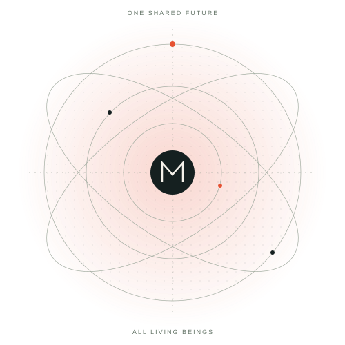

Observe
Gather evidence about the environment and what remains unknown.
One entity, blessing for all.
We are building Manager: one AI entity with the ambition to improve the conditions of life for all living beings, across the universe.

The universe deserves a better manager.
Our ambition is to build an entity that understands the world, discovers changes to its environment, acts on them, and learns from the reality that follows. The horizon is every living being—not a single user, species, or planet.
We begin by building the capabilities that this ambition requires: models grounded in evidence, decisions that account for different populations, and actions whose consequences can be measured.
Manager is being designed to change the conditions that shape life: access, supply, shared resources, institutions, and the connections between them.
Gather evidence about the environment and what remains unknown.
Represent beings, their conditions, and the systems they share.
Explore changes and their consequences, including who may lose.
Apply changes where there is authority to do so. Verify what changed.
Measure the outcomes. Keep improvements. Correct mistakes.
A transparent blessing means knowing what was predicted, what changed, and what happened. We will report measured gains, costs, uncertainty, and failures as the system develops.
Independent explanations of the companies and research advancing human simulation, social world models, and collective intelligence.
How synthetic populations and behavioral predictions are constructed and evaluated.
Human-grounded behavior models, confidence, and the difference between plausible and accurate.
From social simulation to world models, institutional change, and measurable outcomes.
Manager by Anicca. Building toward a universe in which all living beings can thrive.
Explore the vision ↑